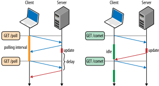

XMLHttpRequest API
使用 XMLHttpRequest（XHR） 对象可以与服务器交互。您可以从 URL 获取数据，而无需让整个的页面刷新。
Ajax（Asynchronous JavaScript and XML）是一系列 Web 开发技术的集合，使用很多的 Web 技术在客户端开发异步 Web 应用。利用 Ajax，Web 应用可以异步的发送数据获取数据，而不干扰现有页面的显示和行为。通过解耦数据接口层和展现层，Ajax 允许 Web 页面或者其他扩展的 Web 应用动态的改变数据而不用重新加载整个页面。实现通常选择 JSON 代替 XML，因为更接近 JavaScript。
EventTarget <- XMLHttpRequestEventTarget <- XMLHttpRequest
基本用法
const xhr = new XMLHttpRequest();
原型属性
此接口继承了 XMLHttpRequestEventTarget 和 EventTarget 的属性。
| 属性 | 说明 | 类型 |
|---|---|---|
onreadystatechange |
当 readyState 属性发生改变时，设定的回调函数会被调用 |
Function |
readyState |
（只读） 用于表示请求的五种状态 | unsigned short |
response |
（只读） 用于获取整个响应实体，响应体的类型由 responseType 来指定 |
Blob<br/>ArrayBuffer<br/>Document<br/>JSON<br/>String<br/>null（请求未完成或失败） |
responseText |
（只读） 用于获取请求的响应文本 | DOMString<br/>null（请求未完成或失败） |
responseType |
用于设置该值能够改变响应类型 | XMLHttpRequestResponseType |
status |
（只读）用于获取请求的 响应状态码 | unsigned short |
statusText |
（只读）用于获取请求的 响应状态信息，包含一个状态码和消息文本 | DOMString |
timeout |
用于表示请求 最大请求时间（毫秒），若超出该时间，请求会自动终止 | unsigned long |
upload |
（只读） 用于在 upload 上添加一个 事件监听 来跟踪上传过程 |
XMLHttpRequestUpload |
withCredentials |
用于指定跨域 Access-Control 请求是否应当带有授权信息，如 Cookie 或授权首部字段 |
Boolean |
onreadystatechange
使用示例：
const xhr = new XMLHttpRequest();
xhr.open('GET', 'https://developer.mozilla.org/', true);
xhr.onreadystatechange = function() {
if (xhr.readyState === XMLHttpRequest.DONE && xhr.status === 200) {
console.log(xhr.responseText);
}
};
xhr.send();
readyState
| 值 | 状态 | 描述 |
|---|---|---|
| 0 | UNSENT |
请求代表被创建，但尚未调用 open 方法 |
| 1 | OPENED |
open 方法已经被调用 |
| 2 | HEADERS_RECEIVED |
send 方法已被调用，并且头部和状态已经可访问 |
| 3 | LOADING |
下载中（responseText 属性已经包含部分数据） |
| 4 | DONE |
下载操作已完成 |
原型方法
下列原型方法按照请求的生命周期设定：
- 请求发送前
- 发送请求
- 请求发送后
-
接收响应后
open
XMLHttpRequest.open 方法用于初始化一个请求，。
语法：
xhr.open(method, url);
xhr.open(method, url, async);
xhr.open(method, url, async, user);
xhr.open(method, url, async, user, password);
参数：
method：请求方法，如 GET、POST、PUT、DELETEurl：请求的 URL 地址async：一个可选的布尔值参数，默认值为true，表示执行异步操作。如果值为false，则send方法不会返回任何东西，直到接收到了服务器的返回数据user：用户名（可选参数），用于授权。默认参数为空字符串password：密码（可选参数），用于授权。默认参数为空字符串
使用方法：
const xhr = new XMLHttpRequest();
xhr.open('GET', 'https://example.com/user');
注意事项：
- 如果
method不是有效的 HTTP 方法或 URL 地址不能被成功解析，将会抛出SyntaxError异常 - 如果请求方法（不区分大小写）为
CONNECT、TRACE或TRACK将会抛出SecurityError异常
setRequestHeader
XMLHttpRequest.sentRequestHeader 方法用于设置 HTTP 请求头信息。
⚠️ 注意：在这之前，你必须确认已经调用了
open方法打开了一个 URL
语法：
xhr.setRequestHeader(header, value);
参数：
header：请求头名称value：请求头值
overrideMimeType
XMLHttpRequest.overrideMimeType 方法用于重写由服务器返回的 MIME 类型，使服务端响应信息中传输的数据按照指定 MIME 类型处理。
例如，可以用于强制把响应流当做 text/xml 来解析，即使服务器没有指明数据是这个类型。
⚠️ 注意：这个方法必须在
send之前被调用
send
XMLHttpRequest.send 方法用于发起网络请求。
- 如果该请求是异步模式（默认），该方法会立即返回。
- 相反，如果请求是同步模式，则直到请求的响应完全接受以后，该方法才会返回。
⚠️ 注意：所有相关的事件绑定必须在调用
send方法之前进行
语法：
xhr.send(body);
参数：
body：在 XHR 请求中要发送的数据体，可以是以下其中某种类型- ArrayBuffer
- Blob
- Document
- DOMString
- FormData
- URLSearchParams
- USVString
- null
使用方法：
const xhr = new XMLHttpRequest();
xhr.open('GET', '/server', true);
xhr.onload = function() {
// 请求结束后处理
};
xhr.send(null);
// xhr.send('Hello world!')
// xhr.send(new Blob())
// xhr.send(new Int8Array())
// xhr.send({ form: 'data' })
// xhr.send(document)
abort
XMLHttpRequest.abort 用于当请求已发送后立刻中止请求。当该方法执行后，readyState 将会被置为 XMLHttpRequest.UNSENT，并且请求的 status 属性置为 0。
getRequestHeader
XMLHttpRequest.getRequestHeader 方法用于获取指定响应头的值，如果响应头还没有被接收，或该响应头不存在，则返回 null。
注意：使用该方法获取某些响应头时，浏览器会抛出异常，具体原因如下
- W3C 的 XHR 标准中做了限制，规定客户端无法获取
response中的Set-Cookie、Set-Cookie2这 2 个字段，无论是同域还是跨域请求 - W3C 的 CORS 标准对于跨域请求也做了限制，规定对于跨域请求，客户端允许获取的响应头首部字段只限于简单的响应首部字段（常见的响应首部字段如下）
- Expires
- Cache-Control
- Last-Modified
- Pragma
- Access-Control-Expose-Headers
- Content-Language
- Content-Type
getAllRequestHeaders
XMLHttpRequest.getAllResquestHeaders 方法用于获取所有响应头信息（响应头名和值），如果响应头还没有接收，则返回 null。
⚠️ 注意：使用该方法获取的响应头首部字段与在开发者工具 Network 面板中看到的响应头不一致。
原型事件
| 事件名 | 说明 |
|---|---|
loadstart |
用于当网络请求发送后触发，即调用 XMLHttpRequest.send 方法后触发，若未被调用则不会触发 |
load |
用于当请求完成时触发，此时 readyState 值为 DONE（4） |
loaded |
用于当某个资源的加载进度停止后触发，例如已经触发 abort、error、load 事件之后 |
progress |
用于当请求接收到数据的时候被周期性触发。 |
abort |
用于当请求被暂停时触发。 |
timeout |
用于当请求超出最大时间时触发。 |
error |
用于当请求遭遇异常时触发 |
事件执行顺序：
- 状态变更时触发
readystatechange：readyState状态变更时触发
- 请求发送前
xhr.loadstart
- 请求发送阶段
xhr.upload.onloadstartxhr.upload.onprogressxhr.upload.onloadxhr.upload.onloadend
- 请求发送结束，开始加载资源后
xhr.onprogressxhr.onloadxhr.onloadend
- 异常处理
xhr.onabortxhr.timeoutxhr.error
应用示例
上传数据
下载数据
传输进度
XMLHttpRequest 对象传送数据的时，通过 progress 事件可以获取传输进度信息。
它分成上传和下载两种情况：
- 下载的
progress事件属于 XMLHttpRequest 对象 - 上传的
progress事件属于 XMLHttpRequest.upload 对象
我们先定义 progress 事件的回调函数：
function updateProgress(event) {
if (event.lengthComputable) {
var percentComplete = event.loaded / event.total;
}
}
xhr.onprogress = updateProgress;
xhr.upload.onprogress = updateProgress;
上面的代码中，event.total 是需要传输的总字节，event.loaded 是已经传输的字节。如果 event.lengthComputable 不为真，则 event.total 等于 0。
定时轮询
定时轮询的基本思路就是浏览器每隔一段时间向浏览器发送 HTTP 请求，服务器端在收到请求后，不论是否有数据更新，都直接进行响应。这种方式实现的即时通信，本质上还是浏览器发送请求，服务器接受请求的一个过程，通过让客户端不断的进行请求，使得客户端能够模拟实时地收到服务器端的数据的变化。
这种方式的优点是比较简单，易于理解，实现起来也没有什么技术难点。缺点是显而易见的，这种方式由于需要不断的建立 HTTP 连接，严重浪费了服务器端和客户端的资源。尤其是在客户端，距离来说，如果有数量级想对比较大的人同时位于基于短轮询的应用中，那么每一个用户的客户端都会疯狂的向服务器端发送 HTTP 请求，而且不会间断。人数越多，服务器端压力越大，这是很不合理的。
因此短轮询不适用于那些同时在线用户数量比较大，并且很注重性能的 Web 应用。
const xhr = new XMLHttpRequest();
// 每 1000 毫秒向服务器发送一次轮询请求
setInterval(function() {
xhr.open('GET', '/server');
xhr.onreadystatechange = function() {};
xhr.send();
}, 1000);
长轮询
当服务器收到客户端发来的请求后,服务器端不会直接进行响应，而是先将这个请求挂起，然后判断服务器端数据是否有更新。如果有更新，则进行响应，如果一直没有数据，则到达一定的时间限制(服务器端设置)才返回。 。 客户端 JavaScript 响应处理函数会在处理完服务器返回的信息后，再次发出请求，重新建立连接。
长轮询和短轮询比起来，明显减少了很多不必要的 http 请求次数，相比之下节约了资源。长轮询的缺点在于，连接挂起也会导致资源的浪费。
function checkUpdate() {
var xhr = new XMLHttpRequest();
xhr.open('GET', '/user');
xhr.onreadystatechange = function() {
checkUpdate();
};
xhr.send();
}
实现思路：
- 处理接收到的数据并启动下一轮检测更新
- 启动下一轮检测更新
- 发起首次更新请求
轮询与长轮询都是基于 HTTP 的，两者本身存在着缺陷：
- 轮询需要更快的处理速度；
- 长轮询则更要求处理并发的能力；
两者都是 被动型服务器 的体现：服务器不会主动推送信息，而是在客户端发送 AJAX 请求后进行返回的响应。而理想的模型是在服务器端数据有了变化后，可以主动推送给客户端，这种 主动型 服务器是解决这类问题的很好的方案。Web Sockets 就是这样的方案。
那么长轮询总是比定期轮询更好的选择？
除非消息到达率已知且不变，否则长轮询将始终提供更短的消息延迟。
另一方面，开销讨论需要更细微的观点。首先，请注意，每个传递的消息仍然引起相同的 HTTP 开销；每个新消息都是独立的 HTTP 请求。但是，如果消息到达率高，那么长时间轮询会比定期轮询发出更多的 XHR 请求！
长轮询通过最小化消息延迟来动态地适应消息到达速率，这是您可能想要的或可能不需要的行为。如果对消息延迟要求不高的话，则定时轮询可能是更有效的传输方式。例如，如果消息更新速率较高，则定时轮询提供简单的”消息聚合“机制（即合并一定时间内的消息），这可以减少请求数量并提高移动设备的电池寿命。
四种前端即时通讯技术比较：
- 从兼容性考虑：
短轮询 > 长轮询 > 长连接 SSE > WebSocket - 从性能方面考虑：
WebSocket > 长连接 SSE > 长轮询 > 短轮询
长连接
参考资料：